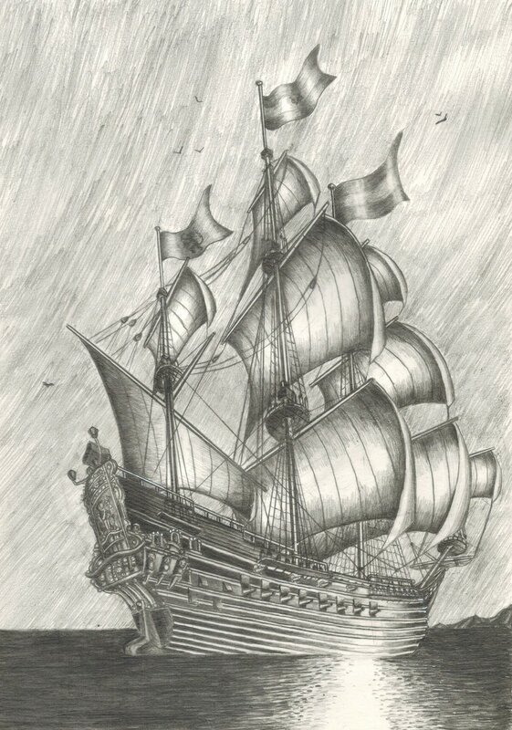
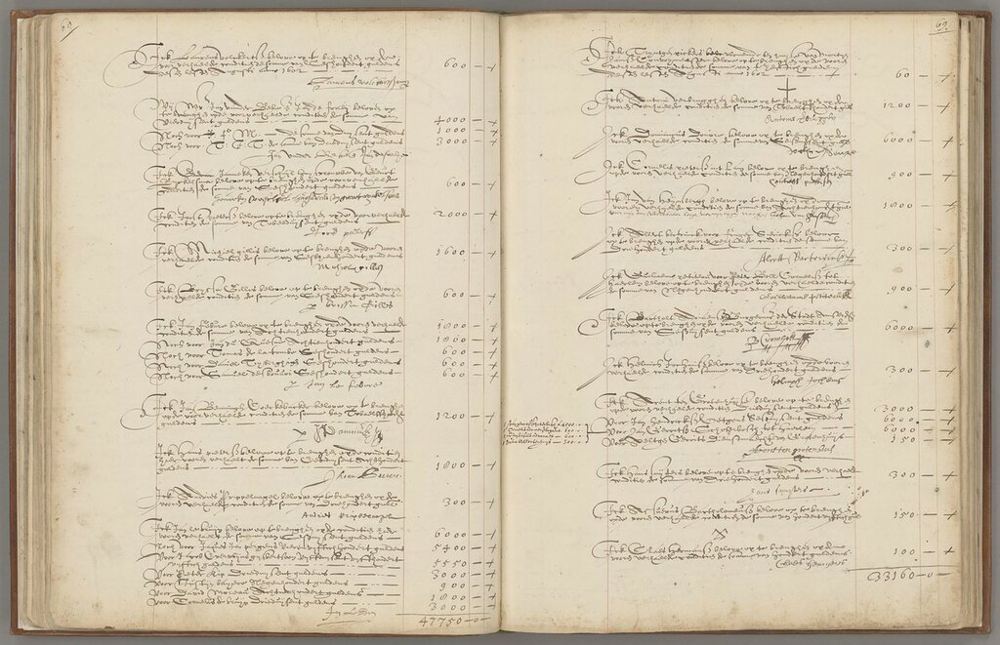
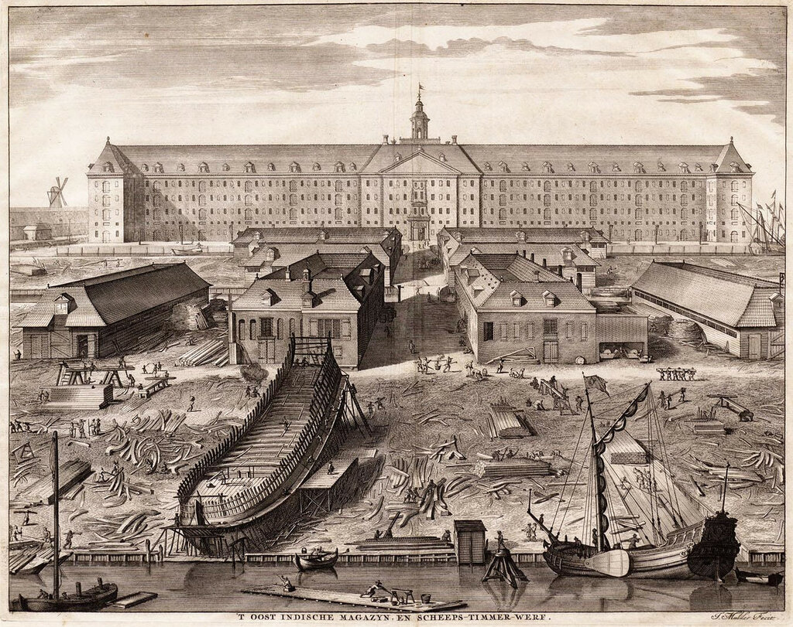
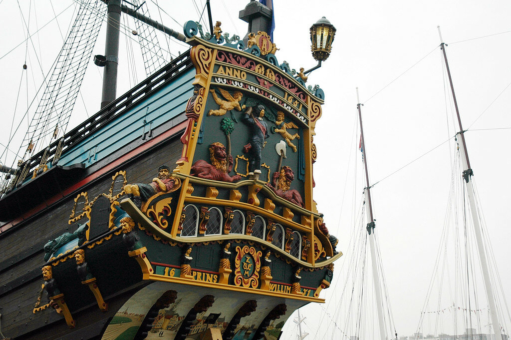

i_mar_a относительно перевода на русский язык нидерландского термина spiegelretourschip. Поскольку в комментариях вести обстоятельное обсуждение неудобно, особенно если это касается темы, не относящейся к содержанию поста, попробую подробнее осветить этот вопрос в отдельном рассказе.
i_mar_a относительно перевода на русский язык нидерландского термина spiegelretourschip. Поскольку в комментариях вести обстоятельное обсуждение неудобно, особенно если это касается темы, не относящейся к содержанию поста, попробую подробнее осветить этот вопрос в отдельном рассказе.
Корабль Голландской Ост-Индской компании Prins Willim (Prins Willem), 1200 тонн.
Любители морской истории не могу пройти мимо событий, связанных с Голландской Ост-Индской компании, событий интересных, порой драматичных, во многом поучительных. Мы к ним обязательно обратимся в будущем, но сейчас коснемся лишь в той степени, которая позволит нам кратко проследить историю голландских ост-индских кораблей, которые назывались retourschip. Это самые большие и самые известные корабли организации. Если мы попытаемся определить смысл, который вкладывали создатели этого корабля в название, то легко можем попасть в капкан видимой очевидности: retourschip – «возвращающийся корабль». В принципе, все корабли рано или поздно возвращаются в свою гавань, за исключением таких обреченных на слом судов, какими являлись, например, русские барки, «идущие одну нижнюю путину, по воде, а затем в ломку». Чтобы понять, в чем все-таки смысл этого понятия, надо разобраться в особенностях работы компании.
Это было первое в мире акционерное общество, которое управлялось советом директоров из 17 человек (Heren XVII). Каждый год ранней весной этот совет составлял список товаров, которые желательно было доставить в Голландию из азиатский стран. Список этот назывался Eis der Retouren и состоял из двух основных частей: в одной был перечень кораблей, численность их экипажей, список предметов снабжения и обеспечения экспедиции, загружаемый груз (драгоценные металлы, товары, пользующиеся спросом в Азии), в количествах, которые по расчетам должны были обеспечить получение в обмен желаемых товаров. Эти списки, составляемые из года в год, породили особые бухгалтерские книги, в которых, вместо разделов «расход» и «приход» имелись два раздела: equipage – учет всех расходов на экспедицию, которые совершались на родине, и retouren – где учитывались доходы от продажи доставленный на родину товаров. Никаких сведений, где и по каким ценам приобретались доставляемые в Голландию товары в этих книгах мы не найдем.

Инвентарная книга Голландской Ост-Индской компании (Inventaris van het archief van de Verenigde Oost-Indische Compagnie (VOC), 1602-1795 (1811) M.A.P. Meilink-Roelofsz, R. Raben, H. Spijkerman Nationaal Archief, Den Haag 1992)
Именно тогда в нидерландском языке впервые появляется слово retouren в смысле “товары, привозимые в Голландию из Азии». Произошло это в самом начале XVI века, однако первоначально никак не связывалось с типом кораблей, на которых Голландская Ост-Индская компания доставляла упомянутые товары в Европу. Эти корабли в документах назывались просто как Ост-индские корабли. Более крупные назывались schepen (корабли), поменьше – jachten (яхты). На заседании совета директоров компании в октябре 1616 года был принят регламент, в соответствии с которым корабли организации подразделялись на большие корабли длиной от 142 футов и малые корабли или яхты длиной 130 футов. Впервые название retourschepen появилось только в 1625 году, и первоначально применялось не ко всем кораблям Ост-Индской компании, а только к вновь построенным специально по заказу компании судам. Постепенно этот термин стал родовым для всех кораблей Ост-Индской компании, доставляющих грузы из Азии в порты Нидерландов. В документах того времени начинают попадаться такие фразы, как 'tot een Retourschip aen te leggen het Jacht Avontsterre' (использовать яхту Avontsterre как Retourschip) или 'gebruiken de fluit ... tot een retourschip' (использовать флейт как retourschip).
В русском языке нет эквивалента этому термину. Нельзя же, например, считать эквивалентами встречающиеся у Бутакова или Энгеля выражения корабль, отправляющийся обратно или корабль на возвратном пути.
Англичане используют термин homeward-bounder, возвращающийся домой, направляющийся на родину корабль, (как, например, в словаре Смита: Homeward-Bounder, a ship on her course home ); но он все же не отражает всей полноты смысла, который мы находим в нидерландском retourschip. Впрочем, если формально принять его новое значение равным значению retourschip с соответствующей пометкой в словаре, то это может явиться выходом из положения.
Тот факт, что термин retourschip, по крайней мере в документах Ост-Индской компании, означал определенный тип корабля, а не направление, на котором он используется, подтверждается таким примером. Когда корабль старел и терял свои мореходные качества настолько, что неразумно было уже направлять на нем ценный груз в Европу, он продолжал свою службу в азиатском регионе, на местных линия. И даже в этом случае его продолжали именовать retourschip.
Сложившаяся кораблестроительная практика, позднее закрепленная в соответствующих регламентах, обеспечивала выполнение кораблями типа retourschip за время их службы семи обратных рейсов. Стандартная грузовместимость типичного retourschip составляла 350 ласт, хотя имелись примеры и большего значения, например, Hollandia могла поднять 550 ласт (чтобы особенно не заморачиваться значениями ласта для различных случаев, для нашей работы достаточно будет считать ласт равным двум тоннам.)
Конструкция retourschip имела особенности, которые диктовались характером перевозимого груза. Это соответствовало общей тенденции того времени строить специализированные корабли вместо универсальных купеческих судов. Именно в это время в Европе появились флейты, приспособленные только для перевозки зерна или леса.

Верфь Голландской Ост-Индской компании в Амстердаме (1726, гравюра Joseph Mulder.)
Вопрос о главных размерениях больших кораблей Голландской Ост-Индской компании широко обсуждался среди ее руководителей и корабельных мастеров. В конце концов пришли к общему мнению, что стандартная длина корабля должна составлять 160 футов, а осадка - не превышать 20 футов, что диктовалось условиями навигации в акватории основных портовых городов Нидерландов. Величина глубины трюма могла варьироваться, но при большой ее величине для усиления конструкции необходимо было ставить дополнительную палубу – кубрик (koebrug; мы подробно писали об этой палубе раньше). Более глубокий трюм и дополнительная палуба позволяли увеличить грузовместимость судна и обеспечивали дополнительные места для перевозки солдат. Исключения из этих правил разрешались лишь для кораблей, строящихся специально для Зеландии, которая имела более глубоководные стоянки в своих гаванях.
Как уже говорилось, срок службы retourschip был ограничен семью рейсами. Рейс начинался весной, и заканчивался в азиатских владениях Голландии к концу года. Возвращение с грузом, которые был заказан годом раньше, занимало еще около девяти месяцев, дата отплытия и прибытия диктовалась расписанием муссонов. После назначенного срока корабли не шли на слом, а продолжали службу на маршрутах между азиатскими портами. И лишь по истечении 20-25 лет корабли переводились во вспомогательный флот (перевозка строительных материалов, хранение товаров и т.п.) или продавались на слом.
Когда в практику кораблестроения вошла плоская корма, то при S-образной форме корпуса она стала напоминать модные тогда ручные зеркала.

Реплика корабля типа spiegelretourschip Prins Willem. Фото Johan Wieland
Отсюда появилась приставка spiegel- (зеркало) и большие корабли Ост-Индской компании получили название spiegelretourschip.
Кстати, имеется какая-то злая ирония в буквальном значении названия retourschip - возвращающийся корабль. По статистике домой возвращалось только одно судно Голландской Ост-Индской компании из трёх, в то время как остальные становились жертвами форс-мажорных обстоятельств.